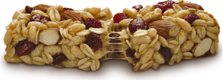

Bu tarif, bal içermeyen, pişirmesiz bağlamayla hazırlanan yüksek enerjili bir bardır. Hurma ve fıstık ezmesi bağlayıcı olarak çalışır; yulaf yavaş, hurma ve kuru meyve hızlı enerji verir; kuruyemiş ve çekirdekler uzun süre tok tutan yağ ve protein sağlar.